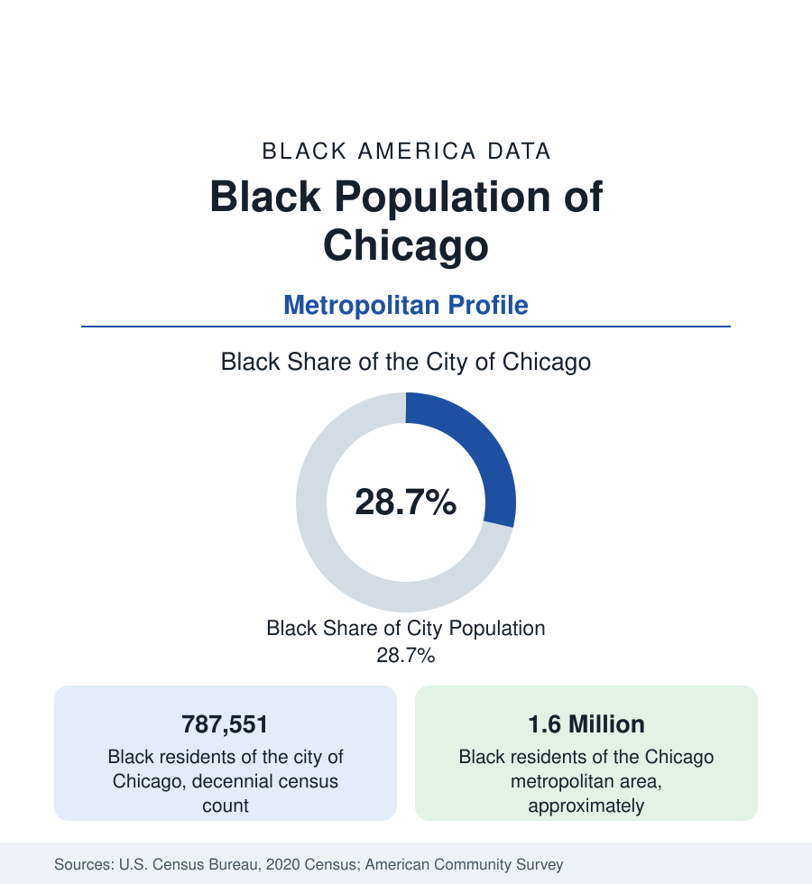

Black Cities
Black Chicago: Population of the City and the Metro
The Chicago metro holds about 1.6 million Black residents; the city itself counted 787,551 in the last census, just under 29 percent. The profile of Black Chicago.

Chicago was the Great Migration's northern capital, and its Black population remains one of the largest in the United States. The decennial census counted 787,551 Black residents in the city of Chicago — just under 29 percent of the city's population — and the metropolitan area holds about 1.6 million Black residents across its Illinois, Indiana, and Wisconsin counties. The modern data tell a two-part story: a metro population that ranks among the nation's largest, and a city population that has been declining for four decades from its peak share of nearly 40 percent. This article profiles Black Chicago in the census record.
The South and West Sides
Black Chicago is geographically concentrated to a degree unusual even among the segregated metros of the North. The South Side — a vast territory running from Bronzeville, the historic Black Metropolis of the migration era, through Chatham, South Shore, and Roseland to the city limits — holds the largest share, a near-continuous Black geography of bungalow neighborhoods, historic districts, and commercial corridors. The West Side holds the second concentration, in Austin, North Lawndale, and Garfield Park. The pattern is the physical residue of the restrictive covenants and redlining that confined Black Chicagoans for half a century, and tract-level data in this reference document how completely the boundaries persist, even as individual neighborhoods change.
The Decline in the City Count
The city of Chicago's Black population peaked in the 1980 census at roughly 1.2 million, about 40 percent of the city. Every census since has recorded a decline — through the 2010s the city lost Black residents in the hundreds of thousands cumulatively — even as the national Black population grew. The components in the migration data are consistent: movement to Chicago's own suburbs, especially the south suburbs of Cook County; movement out of the region entirely in the return migration to the South, with Atlanta, Houston, and Dallas as leading destinations; and lower in-migration than the city once drew. The Black population that remains is, on average, older than the city's — a composition effect of younger families leading the departures.
The Suburban Ring
The metropolitan figure holds up better than the city's because a large share of the movement is redistribution within the region. The south suburbs — communities such as Matteson, Olympia Fields, Flossmoor, and Richton Park — include some of the most affluent majority-Black municipalities in the Midwest, a suburban Black professional geography built substantially by families who left the South Side. Western and northern suburbs and the Indiana cities of Gary and Hammond add further concentrations; Gary, once a steel city of national importance, is majority Black and among the most Black large jurisdictions of the Midwest. Metro-level averages therefore describe a substantially more prosperous Black population than city-level averages do — the same city-versus-region discipline this section applied to Washington, with the signs of prosperity reversed between core and ring in Chicago's case less sharply but in the same direction.
Composition
Survey data describe a Black Chicago of pronounced internal spread. The region holds a major Black professional class anchored by its universities, hospitals, and corporate headquarters, a historic Black business community, and one of the largest Black Catholic and Black Muslim populations in the country. It also records some of the most difficult neighborhood-level indicators in this reference — tracts on the South and West Sides where poverty, vacancy, and health outcomes resemble the hardest-hit geographies in America. Foreign-born Black residents, principally Caribbean and African, are a smaller share here than in New York or Miami, making Black Chicago one of the most predominantly native-born, Southern-rooted Black populations of any northern metro.
Reading the Chicago Numbers
Chicago is the profile where trend and level most need separating. By level — 1.6 million metro residents, a top-five Black population — the city remains a capital of Black America. By trend — four decades of city decline, an aging core population, sustained out-migration — it is the clearest large case of the redistribution now reshaping Black geography toward the South and the suburbs. Both statements are census facts, and the profile's figures should be cited with their geography attached: city or metro, count or share, level or direction.
More in Black Cities
Black Atlanta: Population, Distribution, and Growth of a Black Metropolis
Metro Atlanta holds more than two million Black residents — roughly one in three, second only to New York. The suburban distribution, migration history, and composition of Black Atlanta in the census data.
Black New York: The Largest Black Population in America
The New York metropolitan area holds about 3.4 million Black residents — more than any metro in the nation — and the city itself about two million. The census profile.
Black Washington: The District and the Metro
The Washington metro holds about 1.6 million Black residents, and the District itself — long a majority-Black city — now records a Black share near 41 percent. The census profile.
Source: U.S. Census Bureau, 2020 Census; American Community Survey; Population Estimates Program.